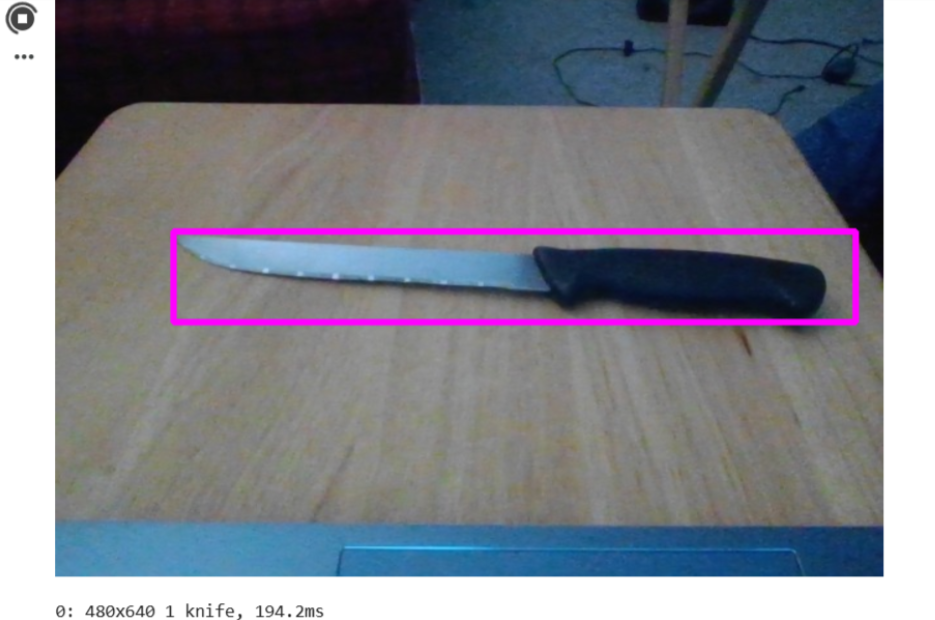

Go back to the homepage
Our Solution
The following Colab project demonstrates how AI and computer vision work together to detect objects from a live camera feed. Using the YOLO (You Only Look Once) deep learning model, the system identifies potential weapons that could harm protected species in real-time, such as axes in the case of deforestation, and guns in the case of poaching. Please copy the following link into your browser:
https://colab.research.google.com/drive/1tB1qX7SlksE89mgmRvZsyM-R0i3nwsKt?usp=sharing
Steps to do in Colab:
1) Locate the menu on the top left. Click "Runtime", and then "Run all".
2) Wait for downloads to complete in the first cell. This installs all the necessary packages.
3) When the second cell starts running, you will receive a pop-up message that asks for permission to access webcam. Select "Accept". After you click "Accept", you will have to re-run the cell by clicking the play button on the top left of that cell so that the webcam can be turned on.
4) Scroll down past the code to access the webcam. Now, you can experiment with it: Hold up an object and check the text below the video; is it detected properly?
5) If code is not running or the webcam is not working, please copy and paste the code from the colab into a new notebook.
* Please note that the email address used for the colab is NOT a personal email address, and was created for the sole purpose of the project *

In the image above, we have placed a knife on a table, and the AI successfully assigns it as a "knife" below the webcam footage.
The webcam and computer vision as of now are very simple. Please click the following link to be guided to the "Future Iterations + Impact" tab. This can also be accessed through the main page.
Future Iterations + Impact